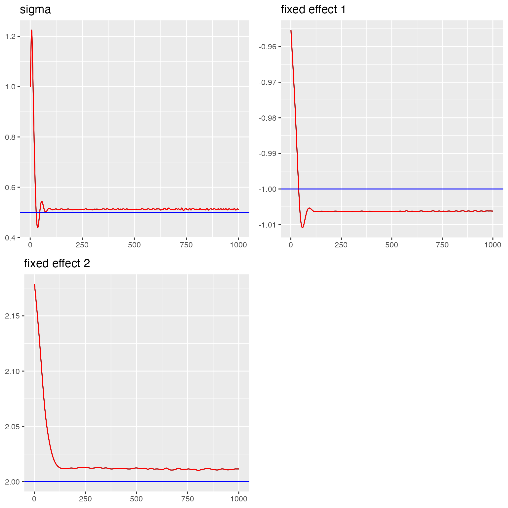
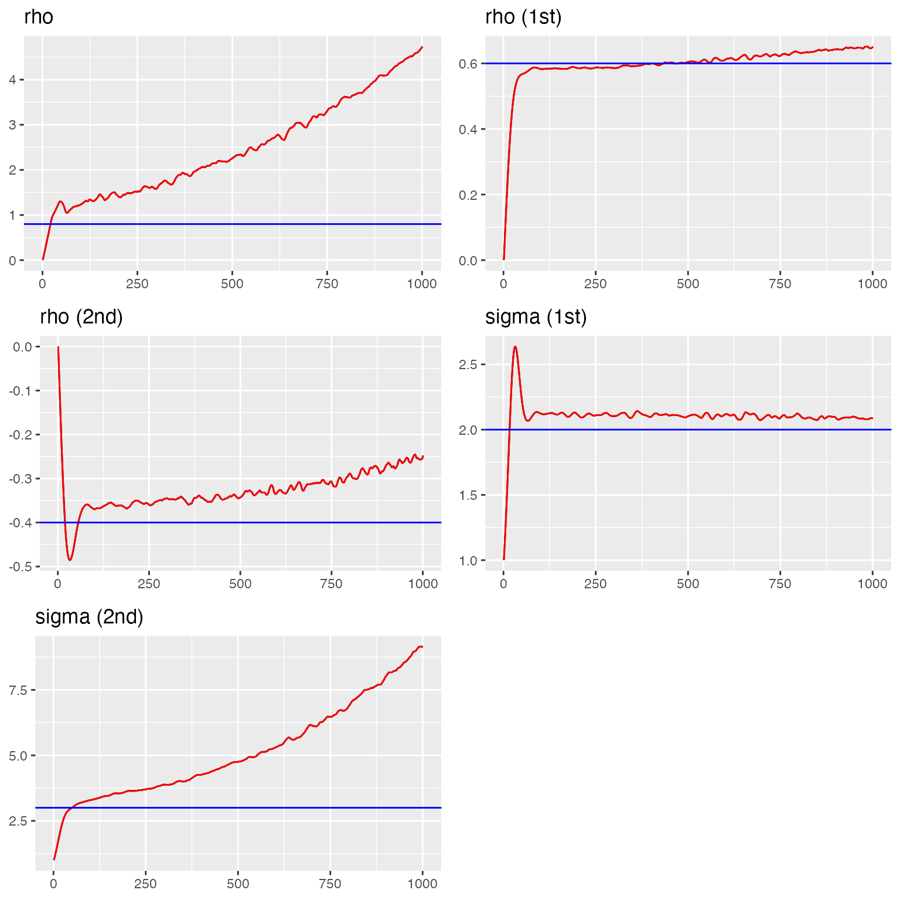
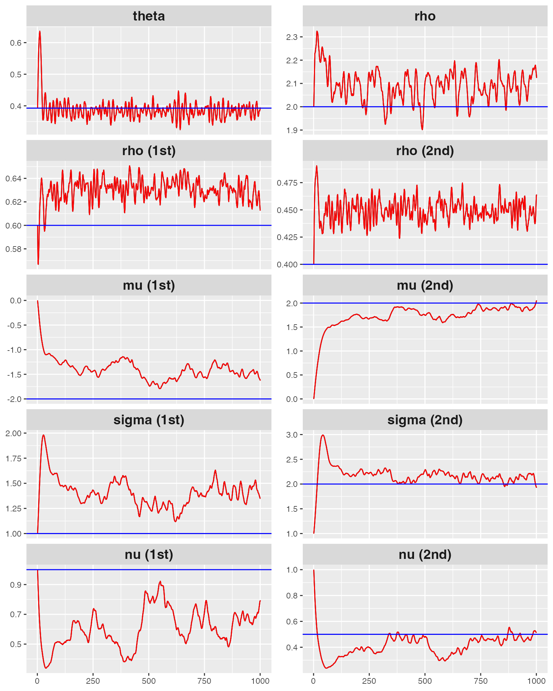
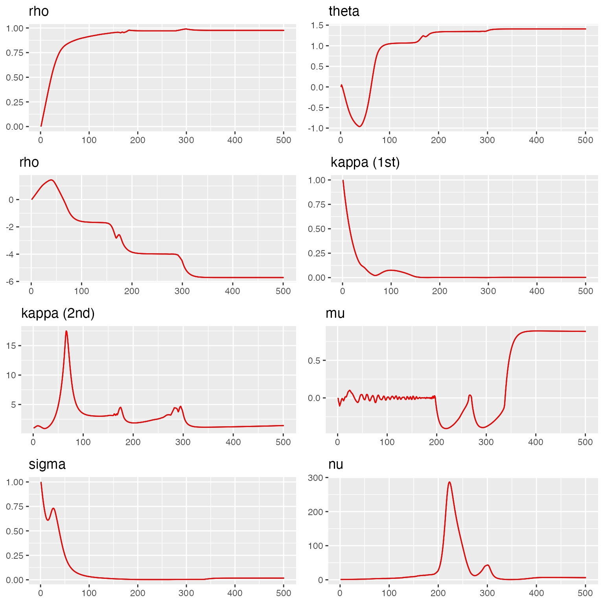

Introduction
For many applications, we need to deal with multivariate data. In this vignette, we introduce the bivariate model which supports modeling two (non-Gaussian) fields and their correlation jointly. The main reference is Bolin and Wallin (2020) Multivariate Type G Matérn Stochastic Partial Differential Equation Random Fields.
Modeling two processes jointly rather than separately offers several advantages:
- Improved inference: Borrowing strength across related processes leads to more precise parameter estimates
- Capturing dependence: Explicitly modeling cross-correlation enables inference about relationships between processes
- Enhanced prediction: Joint modeling can improve predictions, especially when data are sparse for one process
- Scientific insight: Estimated cross-correlation parameters quantify the strength of relationships
The f() function specification is similar to ordinary
models (See e.g. Ngme2 AR(1) model), but
with two additional arguments to identify the variables:
group: a vector of labels to indicate the group of different observations. For example,group = c("field1", "field1", "field2", "field2", "field2"). Ifgroupis provided inngme()function, no need to provide inf()function again.sub_models: a list with names equal to one of the labels ingroup, specifying the sub-models for the two fields. e.g.sub_models = list(field1 = rw1(), field2 = ar1()).
Model Structure
The bivariate model can model two fields jointly. To model their correlation, we use a dependence matrix to correlate them (See Bolin and Wallin, 2020, section 2.2).
For the univariate model, we have: where is some operator, and represents the noise (Gaussian or non-Gaussian).
The bivariate model extends this with a dependence matrix: where is the dependence matrix, and the noise can be classified into 4 types by their complexity.
One Simple Example
Let’s start with a simple time series example. We have data over 5 years (2001-2005) with 2 fields: temperature and precipitation. We want to model these two fields jointly.
We create a synthetic dataset with temperature and precipitation observations over several years, combining them into a single vector with group labels.
temp <- c(32, 33, 35.5, 36)
year_temp <- c(2001, 2002, 2003, 2004)
precip <- c(0.1, 0.2, 0.5, 1, 0.2)
year_pre <- c(2001, 2002, 2003, 2004, 2005)
# Bind 2 fields in one vector, and make labels for them
y <- c(temp, precip)
year <- c(year_temp, year_pre)
labels <- c(rep("temp", 4), rep("precip", 5)) # group labels for 2 fields
x1 <- 1:9
data <- data.frame(y, year, x1, labels)
data
#> y year x1 labels
#> 1 32.0 2001 1 temp
#> 2 33.0 2002 2 temp
#> 3 35.5 2003 3 temp
#> 4 36.0 2004 4 temp
#> 5 0.1 2001 5 precip
#> 6 0.2 2002 6 precip
#> 7 0.5 2003 7 precip
#> 8 1.0 2004 8 precip
#> 9 0.2 2005 9 precipNow we specify the model using the f() function. Notice
how we specify 2 sub-models and 2 types of noises for each
sub-model.
We specify a bivariate model with distinct sub-models for each field (AR(1) for precipitation and RW(1) for temperature), including non-Gaussian noise structures for both.
# Specify bivariate model with two sub-models
bv1 <- f(
year,
model = bv(
mesh = year,
theta = pi / 8,
rho = 0.5,
sub_models = list(
precip = ar1(),
temp = rw1()
)
),
group = labels,
noise = list(
precip = noise_nig(),
temp = noise_nig()
)
)
bv1
#> Model type: Bivariate model
#> theta = 0.393
#> rho = 0.5
#> precip: AR(1)
#> rho = 0
#> temp: Random walk (order 1)
#> No parameter.
#> Bivariate type-G4 noise:
#> precip: NIG
#> Noise parameters:
#> mu = 0
#> sigma = 1
#> nu = 1
#> temp: NIG
#> Noise parameters:
#> mu = 0
#> sigma = 1
#> nu = 1Four Types of Non-Gaussian Noise
In bivariate models, we can have detailed control over the noise structure. The noise can be classified into 4 categories (See Bolin and Wallin, 2020, section 3.1):
- Type-G1: Single mixing variable , shared over 2 fields
- Type-G2: Single , different for each field
- Type-G3: General , shared over 2 fields
- Type-G4: General , different for each field (most flexible)
We specify the type through the single_V and
share_V arguments:
We demonstrate the four types of non-Gaussian noise structures available in bivariate models, varying between single or general mixing variable, and shared or separate between fields.
# Type-G1: Single V, shared
t1 <- f(
year,
model = bv(
mesh = year,
sub_models = list(precip = ar1(), temp = rw1())
),
group = labels,
noise = list(
precip = noise_nig(single_V = TRUE),
temp = noise_nig(single_V = TRUE),
share_V = TRUE
)
)
t1
#> Model type: Bivariate model
#> theta = 0
#> rho = 0
#> precip: AR(1)
#> rho = 0
#> temp: Random walk (order 1)
#> No parameter.
#> Bivariate type-G1 noise (single_V && share_V):
#> precip: NIG
#> Noise parameters:
#> mu = 0
#> sigma = 1
#> nu = 1
#> temp: NIG
#> Noise parameters:
#> mu = 0
#> sigma = 1
#> nu = 1
# Type-G2: Single V, different
t2 <- f(
year,
model = bv(
mesh = year,
sub_models = list(precip = ar1(), temp = rw1())
),
group = labels,
noise = list(
precip = noise_nig(single_V = TRUE),
temp = noise_nig(single_V = TRUE)
)
)
t2
#> Model type: Bivariate model
#> theta = 0
#> rho = 0
#> precip: AR(1)
#> rho = 0
#> temp: Random walk (order 1)
#> No parameter.
#> Bivariate type-G2 noise (single_V):
#> precip: NIG
#> Noise parameters:
#> mu = 0
#> sigma = 1
#> nu = 1
#> temp: NIG
#> Noise parameters:
#> mu = 0
#> sigma = 1
#> nu = 1
# Type-G3: General V, shared
t3 <- f(
year,
model = bv(
mesh = year,
sub_models = list(precip = ar1(), temp = rw1())
),
group = labels,
noise = list(
precip = noise_nig(),
temp = noise_nig(),
share_V = TRUE
)
)
t3
#> Model type: Bivariate model
#> theta = 0
#> rho = 0
#> precip: AR(1)
#> rho = 0
#> temp: Random walk (order 1)
#> No parameter.
#> Bivariate type-G3 noise (share_V):
#> precip: NIG
#> Noise parameters:
#> mu = 0
#> sigma = 1
#> nu = 1
#> temp: NIG
#> Noise parameters:
#> mu = 0
#> sigma = 1
#> nu = 1
# Type-G4: General V, different (most flexible)
t4 <- f(
year,
model = bv(
mesh = year,
sub_models = list(precip = ar1(), temp = rw1())
),
group = labels,
noise = list(
precip = noise_nig(),
temp = noise_nig()
)
)
t4
#> Model type: Bivariate model
#> theta = 0
#> rho = 0
#> precip: AR(1)
#> rho = 0
#> temp: Random walk (order 1)
#> No parameter.
#> Bivariate type-G4 noise:
#> precip: NIG
#> Noise parameters:
#> mu = 0
#> sigma = 1
#> nu = 1
#> temp: NIG
#> Noise parameters:
#> mu = 0
#> sigma = 1
#> nu = 1Interaction with Other Fields
When working with multiple fields, we can have different fixed
effects for each field using the special syntax
fe(<formula>, which_group=<group_name>). The
which_group argument specifies which field the fixed
effects apply to. This works similarly for the f()
function.
Here’s an example with different fixed effects for each field:
We build a complete model demonstrating how to specify distinct fixed
effects for each field using which_group, in addition to
including both separate and bivariate random effects.
m1 <- ngme(
y ~ 0 +
fe(~1, which_group = "temp") +
fe(~ 1 + x1, which_group = "precip") +
f(year, model = rw1(), which_group = "temp") +
f(year,
model = bv(
mesh = year,
sub_models = list(precip = ar1(), temp = rw1())
),
noise = list(
precip = noise_nig(),
temp = noise_nig()
)
),
data = data,
group = data$labels,
control_opt = control_opt(estimation = FALSE)
)
# Examine the design matrix
m1$replicates[[1]]$X
#> (Intercept)_temp (Intercept)_precip x1_precip
#> 1 1 0 0
#> 2 1 0 0
#> 3 1 0 0
#> 4 1 0 0
#> 5 0 1 5
#> 6 0 1 6
#> 7 0 1 7
#> 8 0 1 8
#> 9 0 1 9Correlated Measurement Noise
When measuring 2 different fields, we may want to assume that the measurements have correlated errors. This can be written as:
where is the bivariate model, and with if and are measurements from different fields at the same location.
To model this, we use the family argument in
ngme() with corr_measurement = TRUE and
provide index_corr to indicate which observations are
correlated.
Complete Examples: Simulation + Estimation
Example 1: AR(1) with Normal Noise
We set up the parameters for simulation, including sample size, group labels, and resampling of locations to demonstrate the model’s flexibility.
n_obs <- 2000
n_each <- n_obs / 2
group <- rep(c("W1", "W2"), n_each)
reorder_loc <- sample(1:n_each)
# True parameters
rho <- 0.8
rho1 <- 0.6
rho2 <- -0.4
sigma1 <- 2
sigma2 <- 3We simulate bivariate fields using AR(1) processes with different autocorrelation coefficients for each field, plus a cross-correlation between them.
# Simulate bivariate fields
sim_fields <- simulate(
f(
c(reorder_loc, reorder_loc),
model = bv(
mesh = reorder_loc,
rho = rho,
sub_models = list(
W1 = ar1(rho = rho1),
W2 = ar1(rho = rho2)
)
),
group = group,
noise = list(
W1 = noise_normal(sigma = sigma1),
W2 = noise_normal(sigma = sigma2)
)
),
nsim = 1
)
W <- sim_fields[[1]]We add fixed effects and measurement noise to the simulated fields to create the observed response variable.
# Add fixed effects and measurement noise
x1 <- rnorm(n_obs)
x2 <- runif(n_obs)
beta <- c(-1, 2)
sigma_eps <- 0.5
epsilon <- rnorm(n_obs, 0, sigma_eps)
Y <- W + x1 * beta[1] + x2 * beta[2] + epsilonWe prepare the dataset for estimation, organizing all necessary variables in a data frame.
# Prepare data
data_ex1 <- data.frame(
Y = Y,
index = c(reorder_loc, reorder_loc),
x1 = x1,
x2 = x2,
group = group
)We fit the bivariate model to the simulated data using
ngme() with appropriate optimization settings.
# Fit bivariate model
fit_ex1 <- ngme(
Y ~ 0 + x1 + x2 +
f(
index,
model = bv(
mesh = reorder_loc,
sub_models = list(
W1 = ar1(),
W2 = ar1()
)
),
group = group,
noise = list(
W1 = noise_normal(),
W2 = noise_normal()
)
),
data = data_ex1,
group = data_ex1$group,
family = noise_normal(),
control_opt = control_opt(
iterations = 1000,
n_parallel_chain = 1,
rao_blackwellization = TRUE,
seed = 42
)
)
#> Starting estimation...
#>
#> Starting posterior sampling...
#> Posterior sampling done!
#> Average standard deviation of the posterior W: 2.721581
#> Note:
#> 1. Use ngme_post_samples(..) to access the posterior samples.
#> 2. Use ngme_result(..) to access different latent models.
fit_ex1
#> *** Ngme object ***
#>
#> Fixed effects:
#> x1 x2
#> -0.992 2.038
#>
#> Models:
#> $field1
#> Model type: Bivariate model
#> theta = 0 (fixed)
#> rho = 4.73
#> W1: AR(1)
#> rho = 0.647
#> W2: AR(1)
#> rho = -0.261
#> Bivariate type-G4 noise:
#> W1: NORMAL
#> Noise parameters:
#> sigma = 2.09
#> W2: NORMAL
#> Noise parameters:
#> sigma = 8.59
#>
#>
#> Measurement noise:
#> Noise type: NORMAL
#> Noise parameters:
#> sigma = 0.505We create trace plots to visualize the convergence of the chains and assess the quality of the fit.

#> Last estimates:
#> $sigma
#> [1] 0.5048548
#>
#> $`fixed effect 1`
#> [1] -0.9922389
#>
#> $`fixed effect 2`
#> [1] 2.03686
traceplot(fit_ex1, "field1", hline = c(rho, rho1, rho2, sigma1, sigma2))
#> Last estimates:
#> $rho
#> [1] 4.733651
#>
#> $`rho (1st)`
#> [1] 0.650834
#>
#> $`rho (2nd)`
#> [1] -0.2478482
#>
#> $`sigma (1st)`
#> [1] 2.088468
#>
#> $`sigma (2nd)`
#> [1] 9.141484Example 2: AR(1) with NIG Noise
We define the initial experiment setup, including sample size, group labels, and the true parameters of the bivariate model with NIG noise.
set.seed(169)
n_obs <- 1000
n_each <- n_obs / 2
group <- c(rep("W1", n_each), rep("W2", n_each))
# True parameters
theta <- pi / 8
rho <- 2
rho_1 <- 0.6
rho_2 <- 0.4
mu_1 <- -2
sigma_1 <- 1
nu_1 <- 1
mu_2 <- 2
sigma_2 <- 2
nu_2 <- 0.5
reorder_loc <- sample(1:n_each)
# Simulate bivariate NIG fields
sim_fields <- simulate(
f(
c(reorder_loc, reorder_loc),
model = bv(
mesh = reorder_loc,
theta = theta,
rho = rho,
sub_models = list(
W1 = ar1(rho = rho_1),
W2 = ar1(rho = rho_2)
)
),
group = group,
noise = list(
W1 = noise_nig(mu = mu_1, sigma = sigma_1, nu = nu_1),
W2 = noise_nig(mu = mu_2, sigma = sigma_2, nu = nu_2)
)
)
)[[1]]
# Correlated measurement noise
Cov_same_idx <- matrix(c(1, 0.7, 0.7, 1), nrow = 2)
Cov_measurement <- Cov_same_idx %x% diag(n_obs / 2)
L <- t(chol(Cov_measurement))
e <- L %*% rnorm(n_obs)
# Fixed effects
x1 <- rexp(n_obs)
x2 <- rnorm(n_obs)
feff <- c(-3, 1.5)
Y <- sim_fields + x1 * feff[1] + x2 * feff[2] + as.numeric(e)We fit the bivariate model with NIG noise to the simulated data, including the correlation structure in the measurement noise.
out <- ngme(
Y ~ 0 + x1 + x2 +
f(
c(reorder_loc, reorder_loc),
model = bv(
theta = theta,
rho = rho,
mesh = reorder_loc,
sub_models = list(
W1 = ar1(rho = rho_1),
W2 = ar1(rho = rho_2)
)
),
name = "bv",
noise = list(W1 = noise_nig(), W2 = noise_nig())
),
group = group,
family = noise_normal(
corr_measurement = TRUE,
index_corr = c(1:n_each, 1:n_each)
),
data = data.frame(Y, x1, x2),
control_opt = control_opt(
optimizer = adam(),
iterations = 1000,
n_parallel_chain = 1,
seed = 113
)
)
#> Starting estimation...
#>
#> Starting posterior sampling...
#> Posterior sampling done!
#> Average standard deviation of the posterior W: 3.405805
#> Note:
#> 1. Use ngme_post_samples(..) to access the posterior samples.
#> 2. Use ngme_result(..) to access different latent models.
out
#> *** Ngme object ***
#>
#> Fixed effects:
#> x1 x2
#> -2.95 1.48
#>
#> Models:
#> $bv
#> Model type: Bivariate model
#> theta = 0.372
#> rho = 1.9
#> W1: AR(1)
#> rho = 0.577
#> W2: AR(1)
#> rho = 0.399
#> Bivariate type-G4 noise:
#> W1: NIG
#> Noise parameters:
#> mu = -2.44
#> sigma = 0.865
#> nu = 1.29
#> W2: NIG
#> Noise parameters:
#> mu = 2.43
#> sigma = 1.88
#> nu = 0.729
#>
#>
#> Measurement noise:
#> Noise type: NORMAL
#> Noise parameters:
#> sigma = 0.887
#> correlation(rho) = 0.616We visualize the trace plots for all model parameters, comparing them with the true values.
traceplot(
out, "bv",
hline = c(theta, rho, rho_1, rho_2, mu_1, mu_2, sigma_1, sigma_2, nu_1, nu_2)
)
#> Last estimates:
#> $theta
#> [1] 0.3719699
#>
#> $rho
#> [1] 1.898407
#>
#> $`rho (1st)`
#> [1] 0.5756377
#>
#> $`rho (2nd)`
#> [1] 0.4077037
#>
#> $`mu (1st)`
#> [1] -2.782057
#>
#> $`mu (2nd)`
#> [1] 2.612155
#>
#> $`sigma (1st)`
#> [1] 0.6530802
#>
#> $`sigma (2nd)`
#> [1] 1.57391
#>
#> $`nu (1st)`
#> [1] 1.62722
#>
#> $`nu (2nd)`
#> [1] 0.7410444Space-Time Bivariate Models
Space-time bivariate models extend the framework to data collected over both space and time. These models use a tensor product structure to efficiently model processes that evolve jointly across spatial and temporal dimensions.
When to Use Space-Time Bivariate Models
Space-time bivariate models are appropriate when:
- You have two response variables measured at multiple locations over time
- The processes exhibit spatial correlation, temporal correlation, and cross-variable correlation
- Separability is reasonable (temporal dynamics can be factored from spatial structure)
Examples include joint modeling of temperature and precipitation from weather stations, or multiple pollutant concentrations from monitoring networks over time.
Space-Time Bivariate Models with Tensor Products
When modeling space-time bivariate processes, we have two main approaches depending on whether the temporal dynamics are shared or different between the two variables.
Two Approaches for Space-Time Bivariate Models
Approach 1: Shared Temporal Dynamics (Used in This Vignette)
Structure:
TP(AR1, BV(Matérn, Matérn))
This approach assumes both variables share the same temporal correlation structure but can have different spatial ranges and cross-correlation patterns. This is achieved by placing the temporal model (AR(1)) as the first component of the tensor product and the bivariate spatial model as the second component.
Mathematical representation:
where both and share the same for temporal persistence.
When to use: - Variables are expected to have similar temporal evolution - You have moderate sample sizes - Examples: temperature and humidity, soil moisture at different depths
Approach 2: Different Temporal Dynamics (More Flexible)
Structure:
BV(TP(AR1, Matérn), TP(AR1, Matérn))
This approach allows each variable to have its own temporal correlation structure. This is achieved by placing the bivariate model at the top level and using complete tensor products for each sub-model.
Mathematical representation:
where has temporal parameter and has temporal parameter (potentially different).
When to use: - Variables have different temporal persistence patterns - You have large sample sizes - Examples: u-wind and v-wind components (which can have different temporal dynamics due to atmospheric circulation patterns)
Here’s how you would specify the model (without running estimation):
# Example: Wind components with different temporal persistence
# This is just model specification - not run in vignette
# Setup (same as Approach 1)
n_time <- 15
n_loc <- 40
mesh_spatial <- fmesher::fm_mesh_2d(...)
mesh_temporal <- fmesher::fm_mesh_1d(1:n_time)
# Create indices
time_idx <- rep(1:n_time, each = n_loc * 2)
locations_expanded <- rbind(locations, locations)
locations_full <- do.call(rbind, replicate(n_time, locations_expanded, simplify = FALSE))
group <- rep(rep(c("u_wind", "v_wind"), each = n_loc), n_time)
# Approach 2 model specification
model_approach2 <- ngme(
Y ~ 0 + x1 + x2 +
f(
map = cbind(x, y), # Spatial coordinates
model = bv( # Bivariate at top level
mesh = mesh_spatial,
sub_models = list(
u_wind = tp( # Complete TP for u-wind
mesh_first = mesh_temporal,
mesh_second = mesh_spatial,
first = ar1(), # ρ_u (estimated separately)
second = matern()
),
v_wind = tp( # Complete TP for v-wind
mesh_first = mesh_temporal,
mesh_second = mesh_spatial,
first = ar1(), # ρ_v (can differ from ρ_u!)
second = matern()
)
)
),
group = group,
noise = list(
u_wind = noise_nig(),
v_wind = noise_nig()
)
),
data = data,
group = group,
family = noise_normal()
)Note: This example is not evaluated in the vignette to keep compilation time reasonable. Use Approach 2 only when you have strong evidence that temporal dynamics differ between variables.
Separability: What Does It Mean?
The separability assumption in Approach 1 means the covariance structure can be written as:
where index the two variables.
Key implication: Both variables share the same temporal correlation structure (same AR(1) ), but can have different spatial ranges and different cross-correlation patterns through .
Summary: Choosing Between Approaches
| Aspect | Approach 1 (Used Here) | Approach 2 |
|---|---|---|
| Structure | TP(AR1, BV(Matérn, Matérn)) |
BV(TP(AR1, Matérn), TP(AR1, Matérn)) |
| Temporal | Shared () | Different () |
| Top-level model | model = tp() |
model = bv() |
| Sub-models | Each field: matern()
|
Each field: tp(ar1(), matern())
|
| Parameters | Fewer (1 temporal ) | More (2 temporal s) |
| Flexibility | Less | More |
| Data required | Less | More |
| Use when | Variables evolve similarly in time | Variables have different temporal dynamics |
| Examples | Temp/humidity | u-wind/v-wind |
Validation strategy: 1. Start with Approach 1 (simpler, shown in this vignette) 2. If you suspect different temporal dynamics, fit Approach 2 3. Compare models using cross-validation 4. If temporal parameters , Approach 1 is justified 5. If substantially differs from , use Approach 2
Model Structure in ngme2
Using Approach 1 (shared temporal dynamics), the model is specified as:
f(
map = list(time_index, spatial_coords),
model = tp(
first = ar1(mesh = time_mesh), # Temporal component (shared)
second = bv( # Bivariate spatial component
mesh = spatial_mesh,
sub_models = list(
field1 = matern(),
field2 = matern()
)
)
),
group = group_labels,
noise = list(
field1 = noise_nig(),
field2 = noise_nig()
)
)Key components:
- First component: Temporal dynamics (e.g., AR(1), random walk) shared across both variables
- Second component: Bivariate spatial structure with potentially different spatial ranges for each field
- Group labels: Identify which observations belong to which variable
Example: Space-Time Bivariate
We set up the spatial domain, spatial mesh, temporal mesh, and generate observation locations for a complete space-time bivariate model example.
set.seed(123)
# Spatial domain and mesh
domain <- cbind(
x = c(0, 10, 10, 0, 0),
y = c(0, 0, 5, 5, 0)
)
mesh_spatial <- fmesher::fm_mesh_2d(
loc.domain = domain,
max.edge = c(1.0, 2),
cutoff = 0.5
)
# Temporal setup
n_time <- 15
n_loc <- 40
mesh_temporal <- fmesher::fm_mesh_1d(1:n_time)
# Generate observation locations
locations <- cbind(
x = runif(n_loc, 0.5, 9.5),
y = runif(n_loc, 0.5, 4.5)
)
# Create space-time indices for bivariate data
time_idx <- rep(1:n_time, each = n_loc * 2)
spatial_coords <- do.call(rbind, replicate(n_time,
rbind(locations, locations),
simplify = FALSE
))
group <- rep(rep(c("field1", "field2"), each = n_loc), n_time)
cat("Total observations:", length(time_idx), "\n")
#> Total observations: 1200
cat("Observations per variable:", sum(group == "field1"), "\n")
#> Observations per variable: 600We simulate a space-time bivariate process using tensor products with shared temporal dynamics (AR(1)) and bivariate spatial structure with different ranges for each field.
# True parameters
true_rho_time <- 0.7
true_theta <- pi / 8
# Simulate space-time bivariate process
sim_model <- f(
map = list(time_idx, spatial_coords),
model = tp(
first = ar1(mesh = mesh_temporal, rho = true_rho_time),
second = bv(
mesh = mesh_spatial,
theta = true_theta,
sub_models = list(
field1 = matern(),
field2 = matern()
)
)
),
group = group,
noise = noise_nig(mu = 0, sigma = 1, nu = 0.5)
)
W_sim <- simulate(sim_model, nsim = 1)[[1]]
# Add fixed effects and measurement noise
x1 <- rnorm(length(W_sim))
x2 <- runif(length(W_sim))
beta <- c(-1, 2)
sigma_meas <- 0.5
epsilon <- rnorm(length(W_sim), 0, sigma_meas)
Y <- W_sim + x1 * beta[1] + x2 * beta[2] + epsilonWe organize the space-time data into a data frame containing temporal indices, spatial coordinates, covariates, and group labels.
# Prepare data
data_st <- data.frame(
Y = Y,
time = time_idx,
x = spatial_coords[, 1],
y = spatial_coords[, 2],
x1 = x1,
x2 = x2,
group = group
)
# Fit space-time bivariate model
fit_st <- ngme(
Y ~ 0 + x1 + x2 +
f(
map = list(time, cbind(x, y)),
name = "spacetime_bv",
model = tp(
first = ar1(mesh = mesh_temporal),
second = bv(
mesh = mesh_spatial,
sub_models = list(
field1 = matern(),
field2 = matern()
)
)
),
group = group,
noise = noise_nig()
),
data = data_st,
group = data_st$group,
family = noise_normal(),
control_opt = control_opt(
iterations = 500,
n_parallel_chain = 1,
rao_blackwellization = TRUE,
seed = 42
)
)
#> Starting estimation...
#>
#> Starting posterior sampling...
#> Posterior sampling done!
#> Average standard deviation of the posterior W: 0.2348692
#> Note:
#> 1. Use ngme_post_samples(..) to access the posterior samples.
#> 2. Use ngme_result(..) to access different latent models.
fit_st
#> *** Ngme object ***
#>
#> Fixed effects:
#> x1 x2
#> -1.00 2.29
#>
#> Models:
#> $spacetime_bv
#> Model type: Tensor product
#> first: AR(1)
#> rho = 0.996
#> second: Bivariate model
#> theta = 1.06
#> rho = -9.71
#> field1: Matern
#> alpha = 2 (fixed)
#> kappa = 1.74e-05
#> field2: Matern
#> alpha = 2 (fixed)
#> kappa = 65
#> Noise type: NIG
#> Noise parameters:
#> mu = -0.021
#> sigma = 0.0411
#> nu = 2.26
#>
#> Measurement noise:
#> Noise type: NORMAL
#> Noise parameters:
#> sigma = 0.605We visualize the convergence of MCMC chains for the space-time bivariate model.
traceplot(fit_st, "spacetime_bv")
#> Last estimates:
#> $rho
#> [1] -9.78643
#>
#> $theta
#> [1] 1.298642
#>
#> $`kappa (1st)`
#> [1] 8.192705e-05
#>
#> $`kappa (2nd)`
#> [1] 63.82814
#>
#> $mu
#> [1] 0.06834228
#>
#> $sigma
#> [1] 0.03949688
#>
#> $nu
#> [1] 2.109624Helper Tool
Sometimes it’s tedious to provide the index_corr
argument. The helper function compute_index_corr_from_map()
can compute distances and automatically determine which observations
should be correlated:
We demonstrate the use of the helper function that automatically identifies pairs of correlated observations based on their spatial proximity.
# Provide 2D coordinates
x_coord <- c(1.11, 2.5, 1.12, 2, 1.3, 1.31)
y_coord <- c(1.11, 3.3, 1.11, 2, 1.3, 1.3)
coords <- data.frame(x_coord, y_coord)
# Observations within eps distance are correlated
# Here pairs (1,3) and (5,6) are close enough
compute_index_corr_from_map(coords, eps = 0.1)
#> [1] 2 1 2 3 4 4